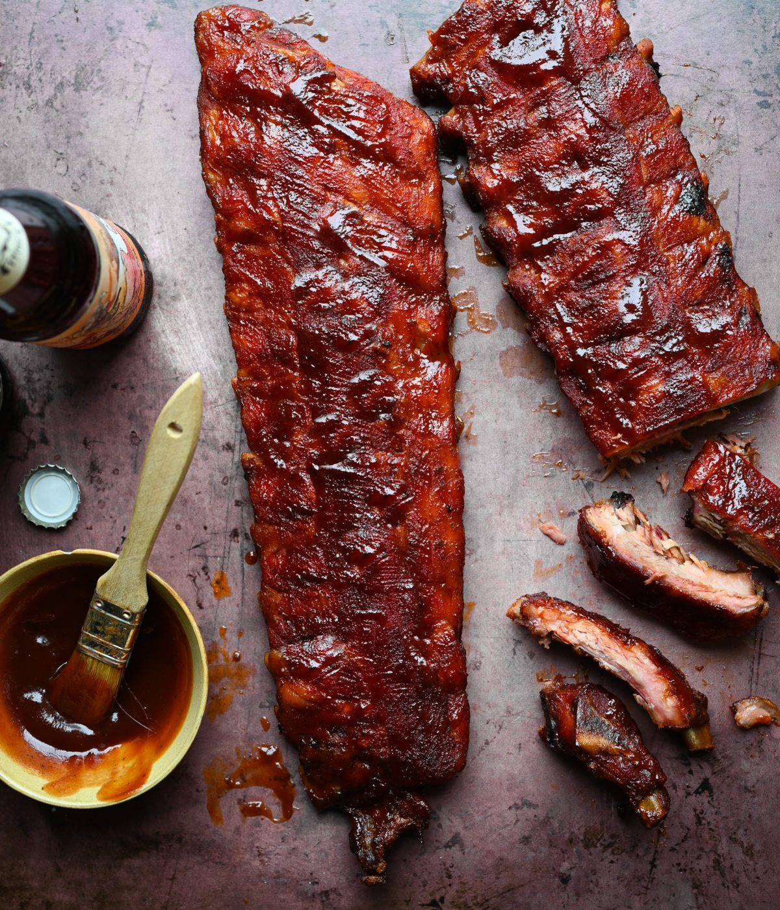

Tender Pork Spare Ribs

Description
This pork spare rib recipe was inspired by a celebrity chef's braising method for baby back ribs. These spare ribs are really tender, and the meat is so flavorful that you don't have to add BBQ sauce unless you want to.
Ingredients
- 1 cup brown sugar
- 1/2 cup fajita seasoning
- 2 tbsp Hungarian sweet paprika
- 2 racks pork ribs, fat trimmed
- 1 cup beer
- 3 garlic cloves, minced
- 1 tbsp honey
- 3 tbsp Worcestershire sauce
- 1 tbsp brown mustard